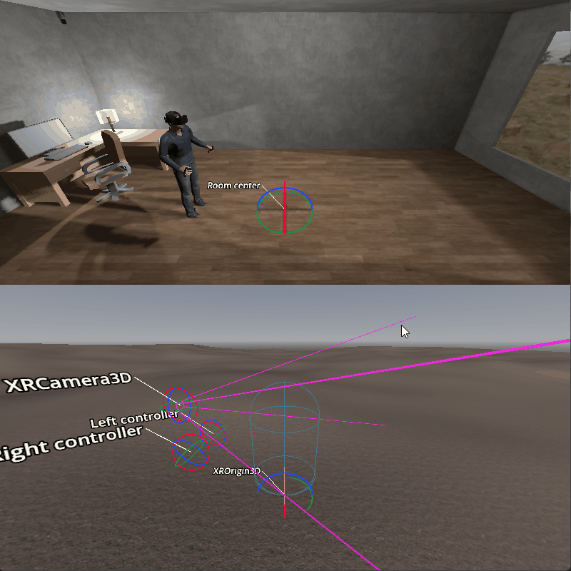
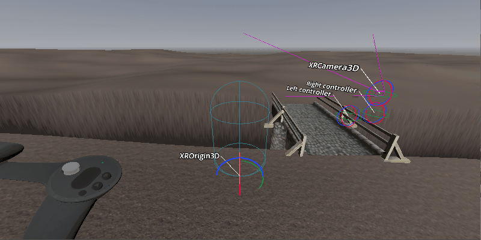
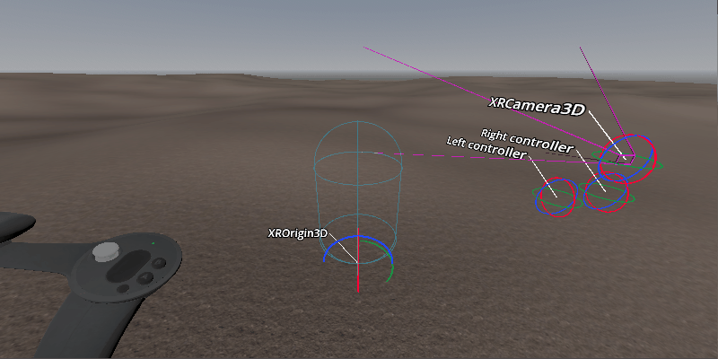
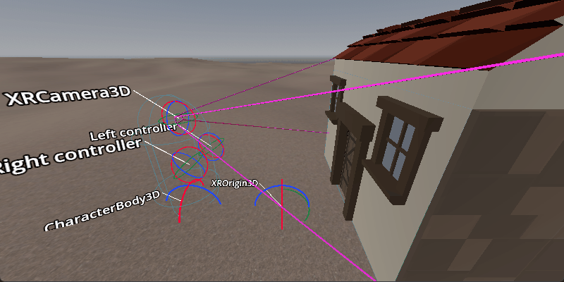
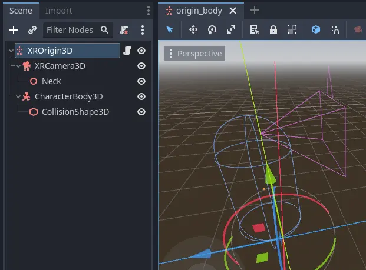
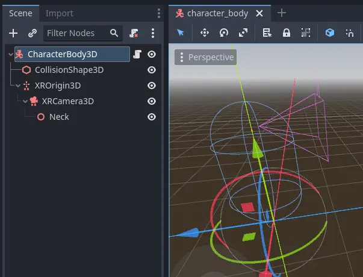

Room scale trong XR
Một trong những yếu tố cốt lõi của dự án XR là khả năng đi lại tự do trong một không gian rộng. Không gian này thường bị giới hạn bởi căn phòng mà người chơi thực sự đang ở, với các cảm biến theo dõi được đặt bên trong. Tuy nhiên, với sự ra đời của công nghệ theo dõi inside-out, không gian chơi ngày càng có thể rộng hơn.
Với nhà phát triển, điều này đặt ra nhiều thách thức thú vị. Trong tài liệu này, chúng ta sẽ xem xét một số thách thức bạn có thể gặp và phác thảo một vài giải pháp. Các vấn đề và thách thức của game XR chơi ở tư thế ngồi sẽ được bàn trong một tài liệu khác.
Ghi chú
Nhà phát triển thường ngồi ở bàn khi xây dựng nền móng cho game. Ở chế độ này, các vấn đề khi phát triển cho room scale sẽ không lộ ra cho đến khi quá muộn. Lời khuyên ở đây là hãy bắt đầu thử nghiệm khi đứng và đi lại càng sớm càng tốt. Khi bạn đã hài lòng rằng nền móng vững chắc, bạn có thể thoải mái ngồi phát triển.
Trong các game góc nhìn thứ nhất truyền thống, người chơi được biểu diễn bằng một node CharacterBody3D. Node này được di chuyển bằng cách xử lý đầu vào truyền thống từ tay cầm, chuột hoặc bàn phím. Một camera được gắn vào node này tại vị trí xấp xỉ nơi đầu của người chơi.
Áp dụng mô hình này vào thiết lập XR, ta thêm một node XROrigin3D làm con của character body, và thêm một XRCamera3D làm con của node origin. Thoạt nhìn có vẻ cách này hoạt động. Tuy nhiên, xem xét kỹ hơn sẽ thấy mô hình này không tính đến việc trong XR có hai dạng di chuyển: di chuyển qua đầu vào tay cầm, và di chuyển vật lý của người chơi trong thế giới thực.
Do đó, node origin không biểu diễn vị trí của người chơi. Nó biểu diễn tâm, hay điểm bắt đầu, của không gian theo dõi mà người chơi có thể di chuyển vật lý trong đó. Khi người chơi đi lại trong phòng, chuyển động này được thể hiện qua việc theo dõi kính của người chơi. Trong game, điều này có nghĩa là vị trí của node camera được cập nhật tương ứng. Về mọi mặt, chúng ta đang theo dõi một cái đầu không có thân. Trừ khi có body tracking, ta không biết gì về vị trí hay hướng của cơ thể người chơi.

Vấn đề đầu tiên mà điều này gây ra khá rõ ràng. Khi người chơi di chuyển bằng đầu vào tay cầm, ta có thể dùng cách làm như trong game thông thường và di chuyển người chơi theo hướng phía trước. Tuy nhiên người chơi không ở nơi ta nghĩ, nên khi tiến về phía trước, ta lại kiểm tra va chạm sai vị trí.

Vấn đề thứ hai thực sự lộ ra khi người chơi đi xa khỏi tâm của không gian theo dõi và dùng đầu vào tay cầm để xoay. Nếu ta xoay character body, người chơi sẽ bị di chuyển quanh phòng theo đường tròn.

Nếu sửa được các vấn đề trên, ta sẽ gặp vấn đề thứ ba. Khi đường đi của người chơi bị chặn trong thế giới ảo, người chơi vẫn có thể bước tới về mặt vật lý.

Chúng ta sẽ xem xét cách giải quyết hai vấn đề đầu bằng hai giải pháp riêng biệt, rồi bàn cách xử lý vấn đề thứ ba.
Giải pháp lấy origin làm trung tâm
Với cách tiếp cận đầu tiên, chúng ta sẽ thay đổi cấu trúc. Đây là cách hiện được triển khai trong XR Tools.

Trong thiết lập này, ta đánh dấu character body là top level để nó không di chuyển theo origin.
Ta cũng có một node hỗ trợ cho biết khớp cổ nằm ở đâu so với camera. Ta dùng nó để xác định tâm cơ thể nằm ở đâu.
Việc xử lý di chuyển nhân vật giờ được thực hiện theo ba bước.
Ghi chú
Bản demo di chuyển lấy origin làm trung tâm chứa ví dụ chi tiết hơn về kỹ thuật được mô tả dưới đây.
Bước 1
Ở bước đầu tiên, chúng ta sẽ xử lý chuyển động vật lý của người chơi. Ta xác định người chơi hiện đang ở đâu và cố gắng di chuyển character body tới đó.
func _process_on_physical_movement(delta):
# Remember our current velocity, we'll apply that later
var current_velocity = $CharacterBody3D.velocity
# Remember where our player body currently is
var org_player_body: Vector3 = $CharacterBody3D.global_transform.origin
# Determine where our player body should be
var player_body_location: Vector3 = $XRCamera3D.transform * $XRCamera3D/Neck.transform.origin
player_body_location.y = 0.0
player_body_location = global_transform * player_body_location
# Attempt to move our character
$CharacterBody3D.velocity = (player_body_location - org_player_body) / delta
$CharacterBody3D.move_and_slide()
# Set back to our current value
$CharacterBody3D.velocity = current_velocity
# Check if we managed to move all the way, ignoring height change
var movement_left = player_body_location - $CharacterBody3D.global_transform.origin
movement_left.y = 0.0
if (movement_left).length() > 0.01:
# We'll talk more about what we'll do here later on
return true
else:
return false
func _physics_process(delta):
var is_colliding = _process_on_physical_movement(delta)
Lưu ý rằng ta trả về true từ hàm _process_on_physical_movement khi không thể di chuyển người chơi đến hết quãng đường.
Bước 2
Bước thứ hai là xử lý việc xoay người chơi theo đầu vào của người dùng.
Vì đầu vào được dùng có thể khác nhau tùy nhu cầu, ở đây ta chỉ gọi hàm _get_rotational_input. Hàm này nên lấy đầu vào cần thiết và trả về tốc độ xoay tính bằng radian trên giây.
Ghi chú
Trong ví dụ, chúng ta sẽ giữ mọi thứ đơn giản và dễ hiểu. Ta sẽ không bận tâm đến các tính năng tạo sự thoải mái như xoay theo nấc (snap turning) và áp dụng vignette. Chúng tôi rất khuyến khích bạn triển khai các tính năng tạo sự thoải mái như vậy.
func _get_rotational_input() -> float:
# Implement this function to return rotation in radians per second.
return 0.0
func _copy_player_rotation_to_character_body():
# We only copy our forward direction to our character body, we ignore tilt
var camera_forward: Vector3 = -$XRCamera3D.global_transform.basis.z
var body_forward: Vector3 = Vector3(camera_forward.x, 0.0, camera_forward.z)
$CharacterBody3D.global_transform.basis = Basis.looking_at(body_forward, Vector3.UP)
func _process_rotation_on_input(delta):
var t1 := Transform3D()
var t2 := Transform3D()
var rot := Transform3D()
# We are going to rotate the origin around the player
var player_position = $CharacterBody3D.global_transform.origin - global_transform.origin
t1.origin = -player_position
t2.origin = player_position
rot = rot.rotated(Vector3(0.0, 1.0, 0.0), _get_rotational_input() * delta)
global_transform = (global_transform * t2 * rot * t1).orthonormalized()
# Now ensure our player body is facing the correct way as well
_copy_player_rotation_to_character_body()
func _physics_process(delta):
var is_colliding = _process_on_physical_movement(delta)
if !is_colliding:
_process_rotation_on_input(delta)
Ghi chú
Ta đã thêm lời gọi xử lý xoay vào physics process, nhưng chỉ thực thi nó nếu đã di chuyển được người chơi hoàn toàn. Điều này có nghĩa là nếu người chơi di chuyển đến nơi không được phép, ta sẽ không xử lý thêm chuyển động nào.
Bước 3
Bước thứ ba và cũng là bước cuối cùng là di chuyển người chơi tiến, lùi hoặc sang ngang theo đầu vào của người dùng.
Giống như với việc xoay, đầu vào khác nhau tùy từng dự án nên ở đây ta chỉ gọi hàm _get_movement_input. Hàm này nên lấy đầu vào cần thiết và trả về một vector hướng đã được nhân theo vận tốc cần thiết.
Ghi chú
Cũng như với việc xoay, ta giữ mọi thứ đơn giản. Ở đây bạn cũng nên cân nhắc thêm các cài đặt tạo sự thoải mái.
var gravity = ProjectSettings.get_setting("physics/3d/default_gravity")
func _get_movement_input() -> Vector2:
# Implement this to return requested directional movement in meters per second.
return Vector2()
func _process_movement_on_input(delta):
# Remember where our player body currently is
var org_player_body: Vector3 = $CharacterBody3D.global_transform.origin
# We start with applying gravity
$CharacterBody3D.velocity.y -= gravity * delta
# Now we add in our movement
var input: Vector2 = _get_movement_input()
var movement: Vector3 = ($CharacterBody3D.global_transform.basis * Vector3(input.x, 0, input.y))
$CharacterBody3D.velocity.x = movement.x
$CharacterBody3D.velocity.z = movement.z
# Attempt to move our player
$CharacterBody3D.move_and_slide()
# And now apply the actual movement to our origin
global_transform.origin += $CharacterBody3D.global_transform.origin - org_player_body
func _physics_process(delta):
var is_colliding = _process_on_physical_movement(delta)
if !is_colliding:
_process_rotation_on_input(delta)
_process_movement_on_input(delta)
Giải pháp lấy thân nhân vật làm trung tâm
Trong thiết lập này, chúng ta giữ character body làm node gốc, nhờ đó dễ kết hợp với các cơ chế game truyền thống hơn.

Ở đây ta có một character body tiêu chuẩn với collision shape, cùng node XR origin và camera là các node con bình thường. Ta cũng có node hỗ trợ cổ.
Việc xử lý di chuyển nhân vật vẫn được thực hiện theo ba bước như trên nhưng được triển khai hơi khác.
Ghi chú
Bản demo di chuyển lấy nhân vật làm trung tâm chứa ví dụ chi tiết hơn về kỹ thuật được mô tả dưới đây.
Bước 1
Trong cách tiếp cận này, bước 1 là nơi mọi điều kỳ diệu diễn ra. Giống như cách trước, ta sẽ áp dụng chuyển động vật lý vào character body, nhưng sẽ triệt tiêu chuyển động đó trên node origin.
Điều này đảm bảo vị trí của người chơi luôn đồng bộ với vị trí của character body.
# Helper variables to keep our code readable
@onready var origin_node = $XROrigin3D
@onready var camera_node = $XROrigin3D/XRCamera3D
@onready var neck_position_node = $XROrigin3D/XRCamera3D/Neck
func _process_on_physical_movement(delta) -> bool:
# Remember our current velocity, we'll apply that later
var current_velocity = velocity
# Start by rotating the player to face the same way our real player is
var camera_basis: Basis = origin_node.transform.basis * camera_node.transform.basis
var forward: Vector2 = Vector2(camera_basis.z.x, camera_basis.z.z)
var angle: float = forward.angle_to(Vector2(0.0, 1.0))
# Rotate our character body
transform.basis = transform.basis.rotated(Vector3.UP, angle)
# Reverse this rotation our origin node
origin_node.transform = Transform3D().rotated(Vector3.UP, -angle) * origin_node.transform
# Now apply movement, first move our player body to the right location
var org_player_body: Vector3 = global_transform.origin
var player_body_location: Vector3 = origin_node.transform * camera_node.transform * neck_position_node.transform.origin
player_body_location.y = 0.0
player_body_location = global_transform * player_body_location
velocity = (player_body_location - org_player_body) / delta
move_and_slide()
# Now move our XROrigin back
var delta_movement = global_transform.origin - org_player_body
origin_node.global_transform.origin -= delta_movement
# Return our value
velocity = current_velocity
if (player_body_location - global_transform.origin).length() > 0.01:
# We'll talk more about what we'll do here later on
return true
else:
return false
func _physics_process(delta):
var is_colliding = _process_on_physical_movement(delta)
Về bản chất, đoạn code trên sẽ di chuyển character body tới nơi người chơi đang đứng, rồi di chuyển node origin ngược lại một lượng bằng như vậy. Kết quả là người chơi luôn ở chính giữa phía trên character body.
Ta bắt đầu bằng việc áp dụng phép xoay. Character body nên hướng về phía người chơi đã nhìn ở frame trước. Ta tính hướng của camera trong không gian của character body. Giờ ta có thể tính góc mà người chơi đã xoay đầu. Ta xoay character body một góc bằng như vậy để nó hướng cùng chiều với người chơi. Sau đó ta đảo ngược phép xoay trên node origin để camera lại thẳng hàng với người chơi.
Với chuyển động, ta làm gần như tương tự. Character body nên ở nơi người chơi đã đứng ở frame trước. Ta tính xem người chơi đã di chuyển bao xa khỏi vị trí này. Sau đó ta cố gắng di chuyển character body tới vị trí đó.
Vì người chơi có thể va vào một collision body và bị chặn lại, ta chỉ di chuyển điểm origin ngược lại đúng bằng lượng mà character body thực sự đã di chuyển. Do đó người chơi có thể rời khỏi vị trí này, nhưng điều đó sẽ được phản ánh trong việc định vị người chơi.
Giống như giải pháp trước, ta trả về true nếu xảy ra trường hợp này.
Bước 2
Ở bước này, ta lại áp dụng phép xoay dựa trên đầu vào tay cầm. Tuy nhiên trong trường hợp này, code gần như giống hệt cách bạn triển khai trong một game góc nhìn thứ nhất thông thường.
Vì đầu vào được dùng có thể khác nhau tùy nhu cầu, ở đây ta chỉ gọi hàm _get_rotational_input. Hàm này nên lấy đầu vào cần thiết và trả về tốc độ xoay tính bằng radian trên giây.
func _get_rotational_input() -> float:
# Implement this function to return rotation in radians per second.
return 0.0
func _process_rotation_on_input(delta):
rotation.y += _get_rotational_input() * delta
func _physics_process(delta):
var is_colliding = _process_on_physical_movement(delta)
if !is_colliding:
_process_rotation_on_input(delta)
Bước 3
Ở bước ba, ta lại áp dụng chuyển động dựa trên đầu vào tay cầm. Và cũng như ở bước 2, giờ ta có thể triển khai nó như trong một game góc nhìn thứ nhất thông thường.
Giống như với việc xoay, đầu vào khác nhau tùy từng dự án nên ở đây ta chỉ gọi hàm _get_movement_input. Hàm này nên lấy đầu vào cần thiết và trả về một vector hướng đã được nhân theo vận tốc cần thiết.
func _get_movement_input() -> Vector2:
# Implement this to return requested directional movement in meters per second.
return Vector2()
func _process_movement_on_input(delta):
var movement_input = _get_movement_input()
var direction = global_transform.basis * Vector3(movement_input.x, 0, movement_input.y)
if direction:
velocity.x = direction.x
velocity.z = direction.z
else:
velocity.x = move_toward(velocity.x, 0, delta)
velocity.z = move_toward(velocity.z, 0, delta)
move_and_slide()
func _physics_process(delta):
var is_colliding = _process_on_physical_movement(delta)
if !is_colliding:
_process_rotation_on_input(delta)
_process_movement_on_input(delta)
Khi người chơi đi tới nơi không được phép
Hãy hình dung tình huống người chơi đang ở bên ngoài một căn phòng bị khóa. Bạn không muốn người chơi vào phòng đó cho đến khi cửa được mở khóa. Bạn cũng không muốn người chơi nhìn thấy những gì bên trong phòng.
Logic di chuyển người chơi bằng đầu vào tay cầm ngăn chặn điều này rất tốt. Người chơi gặp một static body, và code ngăn người chơi đi vào phòng.
Tuy nhiên với XR, không gì ngăn người chơi bước tới một bước thật.
Với cả hai cách tiếp cận đã trình bày ở trên, ta sẽ ngăn character body di chuyển tới nơi người chơi không được đi. Nhưng vì người chơi đã di chuyển vật lý tới vị trí này, camera giờ đã đi vào trong phòng.
Giải pháp hợp lý sẽ là ngăn hoàn toàn chuyển động và điều chỉnh vị trí của điểm XR origin để người chơi vẫn ở bên ngoài phòng.
Vấn đề của cách này là chuyển động vật lý giờ không còn được tái hiện trong không gian ảo. Điều này sẽ khiến người chơi buồn nôn.
Thay vào đó, nhiều game XR đo khoảng cách giữa nơi người chơi thực sự đang đứng và nơi cơ thể ảo của người chơi bị bỏ lại phía sau. Khi khoảng cách này tăng lên, thường đến vài centimet, màn hình sẽ dần tối đen.
Các giải pháp ở trên cho phép ta thêm logic này vào code ở cuối bước 1.
Một số cải tiến thêm cho đoạn code đã trình bày có thể là:
cho phép đầu vào tay cầm miễn là khoảng cách này còn nhỏ,
vẫn áp dụng trọng lực cho người chơi ngay cả khi đầu vào tay cầm bị vô hiệu hóa.
Ghi chú
Các bản demo di chuyển trong kho demo của chúng tôi có ví dụ về việc làm tối màn hình khi người dùng đi vào khu vực bị hạn chế.
Gợi ý cải tiến thêm
Phần trên cung cấp hai lựa chọn tốt làm điểm khởi đầu để triển khai game XR room scale.
Một vài điều nữa đáng nêu ra mà nhiều khả năng bạn sẽ muốn triển khai:
Chiều cao của camera có thể được dùng để phát hiện người chơi đang đứng, cúi, nhảy hay nằm. Bạn có thể điều chỉnh kích thước và hướng của collision shape cho phù hợp. Sẽ càng tốt nếu bạn thêm nhiều collision shape để đầu và thân có shape riêng với kích thước chính xác hơn.
Khi một scene được tải lần đầu, người chơi có thể ở rất xa tâm của không gian theo dõi. Điều này có thể khiến người chơi xuất hiện ở một căn phòng khác với điểm origin. Khi đó game sẽ cố gắng, và thất bại, trong việc di chuyển body của người chơi từ điểm bắt đầu tới nơi người chơi đang đứng. Bạn nên triển khai một hàm reset để di chuyển điểm origin sao cho người chơi ở đúng vị trí bắt đầu.
Cả hai cải tiến trên đều yêu cầu người chơi đã sẵn sàng và đứng thẳng. Điều này không được đảm bảo, vì người chơi có thể vẫn đang đeo kính.
Nhiều game, bao gồm XR Tools, giải quyết việc này bằng cách thêm màn hình giới thiệu hoặc màn hình tải, nơi người chơi phải nhấn một nút khi đã sẵn sàng. Môi trường khởi đầu này thường là một không gian rộng, nơi vị trí của người chơi ít ảnh hưởng đến những gì người chơi nhìn thấy. Khi người chơi sẵn sàng và nhấn nút, đó là lúc bạn ghi lại vị trí và chiều cao của camera.